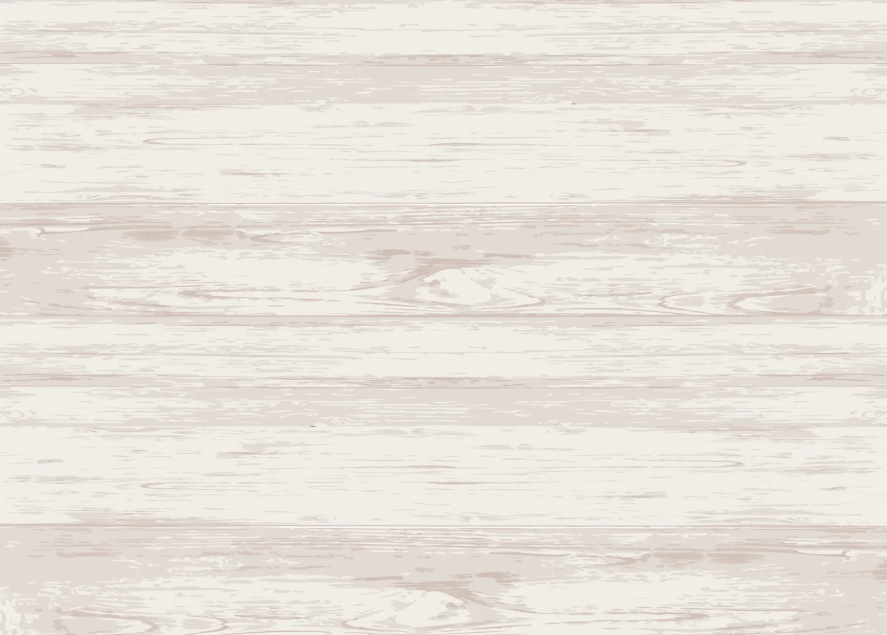

Concept
日常に、もゆの絵画という、
ひとつの窓を添えてみませんか？
絵を部屋にずっと飾っていたいと思える
いつ見ても、新しい感動や癒しを見つけ出せる
色を探し、描いています。
虹色と言えど、派手すぎず
影や光の中に滲んでくる色合いを考えています。
その時のヒントや練った計画・デッサン、色のバランスを大切に
動きも感じられる一枚に。
巨匠たちの絵の鑑賞で心の安定を探せたことを
いまの私の絵で、実現できたらと、願っています。
Profile
もゆ / moyu
デジタルのLINEスタンプも手がける画家。
これまで100セット以上のスタンプ・絵文字を作ってきました。
ユーザー目線もデザインの視点も大切に、アナログ絵画を描きます。
アクリル画とキャンバスで主に制作。
100%を描き込むのとは違う、
見る人の心や視線が動く、
静かなのに、じゃわめぐ。（津軽弁で、ワクワクというような意味）
画面作りを目指しています。
活動経歴
2012〜
2018
毎年３月頃開催された、
岩手の高校の同級生との震災支援になる
グループ展に参加。
2014
初個展「moyu油絵展」青森県弘前市にて開催。
2015
Loft×iPhone女子部のコラボ企画
「iPhoneケース公募デザイン30人展」で
デザインが通り、Loftにて期間限定商品化
2015
「ねこ展」
弘前市カフェにて開催。
2017
「ねこ展2」
西目屋カフェにて開催。
2022
「油絵薔薇展」
弘前れんが倉庫美術館市民ギャラリーにて開催。
2026
弘前美術作家連盟、所属。
Gallery

「公園の木々」

「暖かな光を浴びて、ひと呼吸」

「寄り添う」

「賑わいの中」

「おしゃべり」
Read more...
作品は↓Instagram↓にて更新中
@_._.moyu._._
@_._.moyu._._